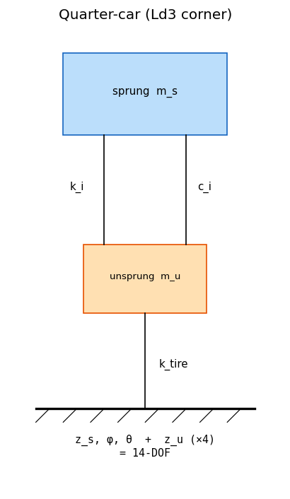
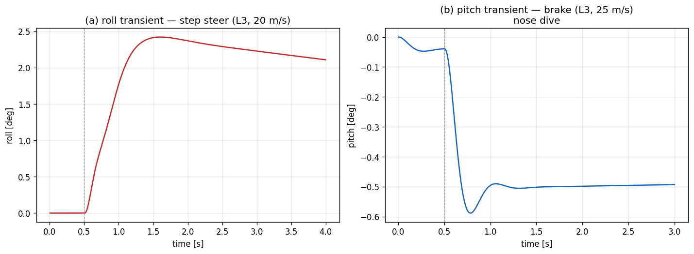

06. Ld3-FourteenDOF (Sprung 3 + Unsprung 4 Vertical DOF)¶
Learning objectives¶
이 chapter 를 마치면 다음을 할 수 있다.
- lumped 14-DOF 모델의 state 구성과 sprung heave/roll/pitch ↔ unsprung z 의 결합을 식 단위로 기술한다.
- anti-dive geometry 의 effective \(h_{cg}\) (scalar factor) 가 pitch moment 를 어떻게 줄이는지 설명한다.
- wheel-hop frequency 의 이론값과 lumped corner-damper 모델에서 그 peak 이 왜 뚜렷하지 않은지 (overdamped unsprung) 를 판단한다.
- quasi-static (Ld2) 과 dynamic (Ld3) 의 거동 차이가 transient 와 dynamic Fz 에서 드러남을 설명한다.
Prerequisites¶
- Chapter 05 — quasi-static weight transfer, roll-stiffness share.
- Chapter 11 — RK4 substepping, 1-step lag.
- 외부 reference — Genta §7 (lumped 14-DOF), spring-mass-damper 기초.
6.1 동기 — 14-DOF 의 분해¶
| DOF group | 성분 | 수 |
|---|---|---|
| Sprung translation | \(x, y, z\) | 3 |
| Sprung rotation | \(\phi, \theta, \psi\) | 3 |
| Unsprung vertical | \(z_{u}\) (FL,FR,RL,RR) | 4 |
| Wheel spin | \(\omega\) (FL,FR,RL,RR) | 4 |
합계 14. Ld3 는 planar (x, y, ψ, vx, vy, r) + 4 wheel spin 을 inner Ld2 로 위임하고, sprung vertical 3 (\(z_s, \phi, \theta\)) + unsprung vertical 4 (\(z_{u,i}\)) 를 추가한다. planar 7 + vertical 7 = 14 DOF (14 second-order ODE = 28 first-order).

6.2 가정¶
| 가정 | 의미 | 깨지는 case |
|---|---|---|
| Lumped suspension | spring/damper 가 corner-to-unsprung 1D | chapter 13-16 (Ld4-Ld5 hardpoint) |
| Small-angle linearized | corner disp \(= z_s + r_y\phi - r_x\theta\) | 대각 자세 |
| Single corner damper | sprung/unsprung damping 공유 | wheel-hop FFT (§6.4 한계) |
| Scalar anti-dive | geometry 를 \([0,1]\) factor 로 | instant-center 정확 모델 |
| Zero camber | \(\gamma=0\) (Pacejka API 만) | chapter 13-16 |
| Outer-step lag \(a_x,a_y\) | vertical 적분 중 constant | chapter 11 (substep update) |
lumped 가정을 푸는 것이 chapter 13-16 (Ld4-Ld5) 의 hardpoint + joint + bushing 분해.

6.3 Sprung body EoM (heave / roll / pitch)¶
corner displacement (sprung side) — heave + pitch + roll 결합:
\(r_{y,i} = \pm T_w/2\) (좌 \(+\), 우 \(-\)). corner 변형에 roll arm 을 포함시키면 per-corner spring/damper 가 roll stiffness 와 roll damping 을 자연히 생성한다 (별도 lumped \(K_\phi\)/\(C_\phi\) 불필요).
spring + damper force on sprung corner (upward positive):
Sprung body EoM:
좌우 대칭 spring 이면 \(\sum_i r_{x,i}F_i\) 의 roll 성분과 \(\sum_i r_{y,i}F_i\) 의 pitch 성분이 상쇄되어 pitch/roll 이 분리된다.
Heave (z_s)¶
spring 합력이 sprung mass 의 vertical 가속도를 만든다.
Pitch (θ) 와 anti-dive¶
- \(-\sum_i r_{x,i} F_i\): spring/damper 의 pitch moment (front 압축 → nose down).
- \(-m_s a_x h_{cg}\): inertia 의 pitch 기여. ISO 부호 \(+\theta=\) nose-down 이므로 제동(\(a_x<0\))→\(+\theta\) (dive), 가속(\(a_x>0\))→\(-\theta\) (squat).
- \((1 - \text{anti})\): suspension geometry 의 anti-dive/anti-squat.
real suspension 은 brake reaction 의 일부가 suspension link 의 instant center 를 통해 chassis 로 직접 전달되어 그만큼 pitch moment 가 감소한다. 단순 모델:
\(\text{anti}=1\) 이면 brake 시 pitch 없음, \(0\) 이면 full pitch.
Roll (φ)¶
- \(\sum_i r_{y,i} F_i\): corner spring/damper 가 만드는 roll restoring moment + roll damping. 대칭 spring 이면 등가 stiffness \(= (k_l+k_r)(T_w/2)^2\), damping \(= (c_l+c_r)(T_w/2)^2\) — 별도 항 없이 자동.
- \(K_{\text{ARB}} = K_{\text{ARB},f} + K_{\text{ARB},r}\): anti-roll bar 의 roll 전용 stiffness (undamped). 유일한 roll 전용 입력.
단위 두 관례: \(K_{\text{ARB}}\) 는 차체 roll 각 기준 roll stiffness [N·m/rad] (Milliken RCVD 표준). 시뮬레이터/setup 에서 흔한 wheel-rate [N/m] 와는 axle track 으로 환산된다: \(K_{\text{ARB,axle}} = k_{\text{wheel}}\cdot T_w^2/2\), 즉 \(k_{\text{wheel}} = 2 K_{\text{ARB,axle}}/T_w^2\). spring 유도식 \((k_l+k_r)(T_w/2)^2\) 와 동일 factor. GUI 는 두 입력을 track 으로 양방향 링크해 한쪽 입력 시 나머지를 자동 계산하고, 저장은 roll stiffness 가 canonical.
quasi-static SS (\(K_{\phi,\text{spring}} = (k_l+k_r)(T_w/2)^2\) 의 axle 합):
왜 roll 도 corner spring 에서 유도하는가¶
이전 구현은 heave/pitch 만 corner spring 에서 유도하고 roll 은 별도 lumped \(K_\phi\) 입력을 썼다 — spring set 과 roll 거동이 decouple 되어 부드러운 spring + 임의의 큰 roll stiffness 같은 비물리 조합이 가능했다. corner 변형에 \(r_{y,i}\phi\) 를 넣으면 roll stiffness/damping 이 spring 에서 자동 유도되어 heave/pitch 와 정합한다. ARB 는 spring 으로 표현 안 되는 roll 전용 요소이므로 \(K_{\text{ARB}}\) 로 분리 — spring 과 ARB 를 독립적으로 tune 할 수 있다 (motorsport setup).
6.4 Unsprung mass EoM¶
per-corner unsprung 의 vertical:
(Newton III: spring/damper 가 sprung 을 위로 미는 force 의 반작용이 unsprung
을 아래로.) \(k_{\text{tire}}\) = tire_vertical_stiffness (default 220 kN/m).
\(z_{\text{road},i}\) = ContactPoint.road_dz, 바퀴 접지점의 노면 높이 (roughness +
지형).
노면 contact 와 지형 자세 (terrain attitude)¶
\(z_{\text{road},i}\) 가 이 모델이 노면을 받는 유일한 통로다. contact provider 가 바퀴별로 채운다:
RoughGround: 2-tone 종방향 profile (wheel-hop 가진).HeightmapGround/InclinedGround: 바퀴 접지점 높이 − CG 접지점 높이, 즉 CG 상대 per-wheel 편차. 절대 고도(예: 50 m)를 그대로 넣으면 소변형 선형 모델이 발산하므로 상대값을 쓴다. 이 편차의 tilt 성분이 4 corner 의 \(z_u\) 를 서로 다르게 settle 시켜 sprung body 의 roll/pitch 를 노면 평면에 맞춘다.
정상상태 검증 (sedan, InclinedGround): 6° bank → body roll 5.98°, 5° grade → nose-up pitch 4.86° (tire vertical compliance 로 약 2-3% undershoot, flat 은 정확히 0). 즉 L3 는 노면 기울기를 body attitude 로 반영한다 — L1/L2 와의 핵심 차이 (chapter 05 §5.x 참조).
Grip Fz coupling (dynamic tire load → 종/횡력)¶
L3 는 매 step 동적 per-corner tire load 를 계산해 inner 의 grip 계산에 주입한다
(set_external_fz):
이로써 suspension transient·노면/지형 하중변동이 tire 종/횡력 grip 에 반영된다 (이전엔 inner Ld2 의 quasi-static \(F_z\) 만 사용 → 환류 없음). 정상상태 transfer 는 Ld2 와 일치하므로 L3 planar 거동은 Ld2 와 근사 일치(divergence ~3e-6, 더 이상 bit-identical 아님)하고, 차이는 transient(turn-in roll lag)과 rough/지형에서 드러난다. 예: rough road 에서 FL grip \(F_z\) std 2.9 N (Ld2 는 0.4 N). Fz/μ 추정기 검증 데이터 생성에 유용.
결합 load 의 static 항은 per-wheel \(\cos(\text{slope})\) 스케일 + aero downforce 를 포함한다 (60 m/s 에서 race_car total \(F_z\) 8.8→24.5 kN, 10° 경사에서 \(\cos\) 스케일 확인). 남은 근사는 unsprung 횡 하중이동 한 항뿐 (일반 트랙에서 작음).
Wheel-hop frequency¶
tire 가 vertical spring 으로 작용 (radial deformation \(= F_z / k_{\text{tire}}\), 승용 200-300 kN/m). 이것이 unsprung resonance 의 dominant stiffness:
sedan default: \(\sqrt{220000/40}/(2\pi) \approx 11.8\) Hz.
Damping ratio 한계¶
unsprung 의 critical damping:
sedan default (\(c=3000, k=30000, m_u=40\)): \(\zeta_u = 1.37\) — overdamped. 실차 corner damper 는 sprung resonance (~1-2 Hz) 에 맞춰 \(\zeta\sim0.3\)-\(0.5\) 인데, 동일 \(c\) 를 unsprung (10+ Hz) 에 쓰면 너무 stiff 하다. 단일 corner damper 모델 에서는 wheel-hop FFT 의 11.8 Hz peak 이 뚜렷이 안 보이고 ~5 Hz coupled mode 만 보인다. follow-up: corner damper 를 sprung/unsprung 로 분리 (§6.13 box).
6.5 RK4 적분 — 14 vertical DOF¶
State (planar 7 은 inner Ld2):
각 second-order 항이 §6.3-6.4 식대로 계산되어 \(\dot y = f(y,t)\) 구성, RK4 (chapter 11) 로 적분. substep dt = 1 ms. \(a_x, a_y\) 는 outer-step 1-step lag (vertical 적분 동안 constant).
6.6 Pose 의 quaternion encoding¶
yaw 는 planar Ld2 가 적분, roll \(\phi\) / pitch \(\theta\) 는 Ld3 의 결과. ZYX intrinsic Euler 로 quat 구성하면 외부 시각화 (CARLA, viewer) 가 차체 자세를 그대로 표현한다. Ld1-Ld2 는 yaw 만 encode (RPY = 0,0,yaw).
6.7 Susp_compression / susp_velocity 진단¶
\(\text{static\_compression}_i = F_{z,i}^{\text{static}} / k_i\) (정적 weight 압축), \(\delta_i\) 는 동적 deviation. compression > static → spring 압축, < static → 신장 (떨림/wheel 들림). ride 분석의 핵심 진단량.
6.8 Ld2 ↔ Ld3 거동 차이¶
quasi-static SS yaw rate / Fz 는 Ld2 와 Ld3 가 일치 (분석값 동일). 차이는:
- Transient — Ld3 가 roll overshoot, settle 시간, wheel-hop oscillation 표현.
- dynamic Fz — Ld3 의 Fz 가 매 step spring transient 반영, Ld2 는 quasi-static.
Ld3 의 planar (vx, vy, r) 는 Ld2 와 bit-equal — Ld3 가 Ld2 위에 vertical 만 추가했음을 보장 (§6.11 검증).
6.9 검증 전략¶
| 검증 | 케이스 |
|---|---|
| Static suspension | at-rest 에서 susp_compression = static_compression |
| Planar 일치 | Ld3 의 vx, vy, r 가 Ld2 와 \(10^{-9}\) 이내 |
| Pose encode | quat 의 roll 추출이 \(\phi_{qs}\) 와 0.02 rad 이내 |
| Roll transient | step steer 의 overshoot + settle |
| Pitch transient | brake 의 nose dive |
| Anti-dive | anti 0 vs 0.5 에서 pitch 감소 |
6.10 한계¶
| 항목 | 한계 | follow-up / chapter |
|---|---|---|
| Sprung 6-DOF | small-angle linearized | full nonlinear (Featherstone) |
| Corner damper | 단일 \(c\) | sprung / unsprung 분리 |
| Anti-dive | scalar factor | instant-center 모델 |
| Link friction | 무시 | bushing nonlinearity (Ld5) |
| Camber from roll | \(\gamma=0\) | chapter 13-16 (hardpoint) |
| Tire relaxation | 무시 | 1st-order tire dynamics (ch03) |
Ld4-Ld5 (chapter 13-16) 의 본격 multibody 가 위 한계 대부분을 해소한다.
6.11 다음 chapter 와의 연결¶
Ld3 까지가 lumped EoM 사다리의 마지막. 이후 chapter 07-10 은 이 plant 위에서 동작하는 control cascade (Lc1-Lc8) 를, chapter 13-16 은 lumped 가정을 푸는 multibody kinematics (Ld4-Ld5) 를 다룬다.
6.12 참고문헌¶
- Genta, G. Motor Vehicle Dynamics, §7 lumped 14-DOF.
- Milliken & Milliken, Race Car Vehicle Dynamics, §17 anti-dive/anti-squat.
- Reimpell, J. The Automotive Chassis, §6 suspension kinematics.
6.13 Self-check¶
1. roll stiffness 를 corner spring 에서 유도하면서 ARB 만 따로 받는 이유?
corner 변형 $\delta_i = z_s + r_{y,i}\phi - r_{x,i}\theta$ 에 roll arm 을 넣으면 spring/damper 가 roll stiffness $(k_l+k_r)(T_w/2)^2$ 와 roll damping 을 자동 생성 — heave/pitch 와 정합. ARB 는 spring 으로 표현 안 되는 roll 전용 요소라 $K_{\text{ARB}}$ 로 분리한다. 이렇게 해야 spring 과 ARB 를 독립 tune 할 수 있고, 부드러운 spring + 임의의 큰 roll stiffness 같은 비물리 조합을 막는다.2. wheel-hop peak (11.8 Hz) 이 FFT 에 뚜렷이 안 보이는 이유?
단일 corner damper 가 sprung resonance 기준이라 unsprung 영역에서 $\zeta_u=1.37$ overdamped → hop oscillation 이 감쇠되어 peak 이 묻힌다. damper 를 sprung/unsprung 로 분리하면 해소.3. anti-dive factor = 1 의 물리적 의미?
brake reaction 이 suspension geometry 를 통해 전부 chassis 로 직접 전달되어 inertia pitch moment 가 0 → 제동해도 nose dive 가 없다. 실차는 보통 0.3-0.6.4. Ld3 의 SS yaw rate 가 Ld2 와 같은데 Ld3 를 쓰는 이유?
SS 는 동일하나 transient 가 다르다. roll/pitch overshoot, settle 시간, dynamic Fz 변동 등 시간 응답이 필요한 ride/handling 분석에서 Ld3 가 의미를 갖는다.5. susp_compression < static_compression 이 뜻하는 상태는?
spring 이 정적 상태보다 신장됨 — 해당 corner 가 들리거나(rebound) 떨리는 중. 지속되면 wheel lift / 접지 상실 위험.6.14 VDSim 구현 노트¶
[VDSim impl] § 6.3 — Sprung EoM 코드
derivatives_vertical()의 corner loop 가delta = z + ry*phi - rx*th로 heave/pitch/roll 을 한 번에, roll EoM 은dphi_dot = (M_roll_spring - K_arb*phi + m_s*ay*h)/Ixx(M_roll_spring = sum ry_i*F_i).[VDSim impl] § 6.3 — spring-유도 roll stiffness 정량
sedan default 의 axle roll stiffness 는 spring 에서 유도: \((k_l+k_r)(T_w/2)^2 = (30000+30000)\cdot(0.775)^2 \approx 36\) kN·m/rad/axle (front=rear, 총 \(\approx 72\) kN·m/rad). ARB default 0. 이전의 lumped
roll_stiffness = 30+25 = 55 kN보다 오히려 큼 — 구 preset 이 spring 을 과소계상하고 있었다. ARB 를 추가하면 그 위에 roll 전용으로 더해진다.[VDSim impl] § 6.4 — Unsprung EoM 코드
core/src/fourteen_dof_dynamics.cpp:155-160:const double k_tire = std::max(1.0, tp_.tire_vertical_stiffness); for (int i = 0; i < NUM_WHEELS; ++i) { const double m_u = std::max(1.0, vp_.unsprung_mass[i]); d.dz_u[i] = zu_dot[i]; d.dz_u_dot[i] = (- F_susp[i] - k_tire * zu[i]) / m_u; }[VDSim impl] § 6.4 — Wheel-hop FFT follow-up
wheel-hop FFT 검증에서 11.8 Hz peak 가 뚜렷하지 않고 ~5 Hz coupled mode 만 보임 — 단일 corner damper 의 unsprung overdamping 탓. follow-up:
corner_damper를damper_sprung/damper_unsprung로 분리 (Adams Car 방식).[VDSim impl] § 6.5 — Vertical RK4 코드
core/src/fourteen_dof_dynamics.cpp:182-238의integrate_vertical().[VDSim impl] § 6.9 — 검증 test
FourteenDOF.*9 tests:ConstructionAndLevel,StaticSuspensionPopulatedAtRest,CompressionGrowsUnderBrakeOnFront,PlanarMotionMatchesL2Closely(vx,vy,r 가 Ld2 와 \(10^{-9}\)),PoseEncodesRollAndPitch,RollOscillatesAndSettles,PitchTransientUnderBrake,SuspensionVelocityNonZeroDuringTransient,AntiDiveReducesPitchUnderBrake. 전 9 pass.[VDSim impl] § 6.x — 사용 예제